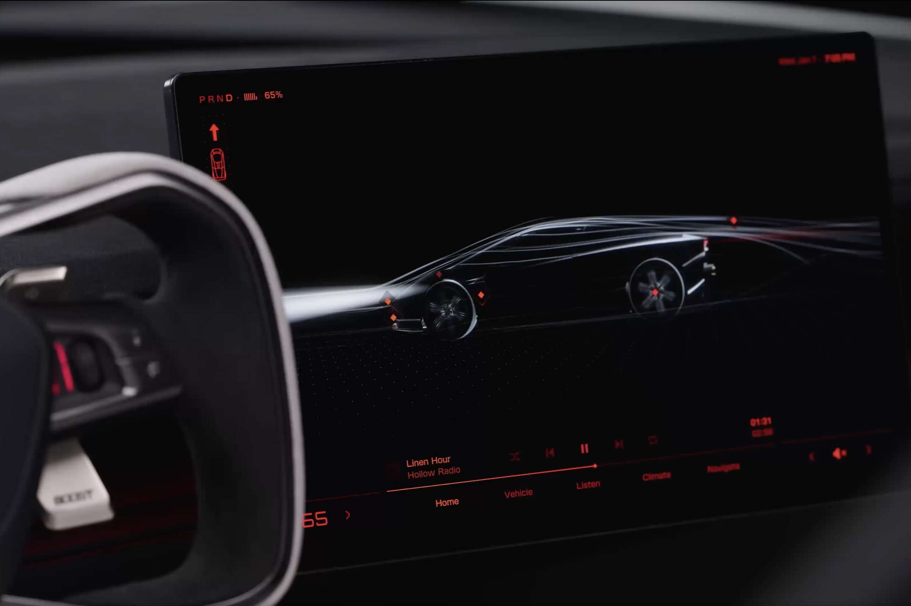

for DC Advanced UX Team.Vivi · Yohan · Libby · Lim Jisu · Katey · Anna
Back Issue

Interaction
Roadster UI: red wireframe, 5,500 PSI
The Roadster touchscreen is red type on black, a wireframe car in the middle, a squared-off yoke beside it. Bottom tabs read Home, Vehicle, Listen, Climate and Navigate. Track Mode draws a live circuit, lap times, brake and motor temperatures, and pressure and temperature per tire. Aero is Auto, Low Drag, High Downforce or Custom, and stability and traction can be switched off. The bar reads Thruster · 5,500 PSI next to Boost Ready. Two smaller displays sit forward of the main screen.
로드스터 화면은 검은 바탕의 빨간 글자이고, 가운데는 와이어프레임, 옆은 각진 요크다. 아래 탭은 Home, Vehicle, Listen, Climate, Navigate다. 트랙 모드는 서킷, 랩 타임, 브레이크와 모터 온도, 타이어 압력과 온도를 그린다. 에어로는 Auto, Low Drag, High Downforce, Custom이고 안정과 트랙션을 끌 수 있다. 상태 바는 Thruster · 5,500 PSI와 Boost Ready다. 앞 화면 둘.
Studio Hono's labels for Temper cider, made with Luka Zeichmann, turn the last point of the 2008 Wimbledon final into a flip book. Nadal's winning rally is four seconds, split into 60 frames, one frame per bottle, on a green and purple court grid. Herr & Frau Rio in Munich printed one Riso base for every bottle; Hono then numbered each by hand. The ball is not ink. It is punched out, so the cider shows through the glass. When the 60 scans play back, the Riso misregistration moves too.
维也纳工作室Hono为Temper苹果酒做的标签，和酿酒人Luka Zeichmann一起，把2008年温网决赛最后一个球做成翻页动画。纳达尔那四秒被拆成60帧，一瓶一帧，底是绿紫球场网格。慕尼黑Herr & Frau Rio用孔版印同一张底，Hono再逐张手写编号。球不是印上去的，是打穿的，光线透过时苹果酒本身就是那颗球。60张扫进屏幕回放时，孔版套印的错位也在动。
빈의 스튜디오 호노가 사이더 메이커 루카 차이히만과 만든 템퍼 라벨은 2008년 윔블던 결승의 마지막 포인트를 플립북으로 만든다. 나달의 승리 랠리 4초를 60프레임으로 나누고, 병 하나에 한 프레임을 올리며, 바탕은 초록과 보라 코트 격자다. 뮌헨의 헤르 운트 프라우 리오가 리소 원판을 찍고, 호노가 번호를 손으로 매겼다. 공은 잉크가 아니라 타공이라, 빛이 통과하면 사이더가 공이 된다. 60장을 재생하면 리소의 핀 오차도 함께 움직인다.
Optical Arts, led by Fabrice Le Nezet, built a CG chain reaction of thousands of mops for Dyson's Clean+Wash Hygiene. Each mop falls with its own weight, and the rig still lets the team choreograph every hit. The reference is analogue footage, paced like a music video rather than a feature list. Thomas Ramboz led CG; Daniela Rotaru at Time Based Arts graded it; 750mph did the sound. The vacuum sits in the middle of the collapse instead of in a beauty shot.
伦敦Optical Arts由Fabrice Le Nezet带领，为戴森Clean+Wash Hygiene做了成千上万把拖把连锁倒下。每把有自己的重量，每一击仍可编排。参考是模拟影像，节奏像音乐视频，不是功能清单。CG由Thomas Ramboz负责，Time Based Arts的Daniela Rotaru调色，声音是750mph。吸尘器站在倒塌中央，而不是单独的美图里。
패브리스 르 네제가 이끄는 옵티컬 아츠는 다이슨 클린+워시 하이진을 위해 수천 개의 대걸레가 연쇄로 쓰러지는 CG를 만들었다. 대걸레마다 무게가 있고, 팀은 그 안에서도 한 장면씩 안무를 통제한다. 참고는 아날로그 영상이고, 리듬은 기능 목록이 아니라 뮤직비디오에 가깝다. CG는 토마 랑보, 그레이드는 타임 베이스드 아츠의 다니엘라 로타루, 사운드는 750mph다. 청소기는 뷰티 컷이 아니라 붕괴의 한가운데에 있다.
Mario Sánchez Aguado's cabin-and-ocean shot started in Maya and Arnold, then sat for a year. He rebuilt it in Houdini Solaris and Karma XPU, with a cabin and fisherman from Big Medium Small and rocks, corals and fish from The Sea's Heart. Low-frequency waves plus a separate displacement were too heavy, so one plane with the Houdini Ocean Procedural carries the water. Transmission sets the depth. Night scatters turquoise lights on corals and fish, finished in Nuke with shake and caustics.
Mario Sánchez Aguado的木屋与海面起初在Maya里搁了一年，后用Houdini Solaris和Karma XPU重做。木屋来自Big Medium Small，珊瑚和鱼来自The Sea's Heart。低频浪加置换太重，一片平面配Ocean Procedural承担水面。透射控制深度。夜景在珊瑚和鱼上撒青绿光，Nuke里加抖动和焦散。
마리오 산체스 아과도의 오두막과 바다 샷은 마야와 아놀드로 시작했다가 일 년을 묵혔다. 그는 후디니 솔라리스와 카르마 XPU로 다시 만들고, 오두막과 어부는 빅 미디엄 스몰에서, 바위와 산호와 물고기는 더 시스 하트에서 가져왔다. 저주파 파도에 별도 변위를 얹으면 너무 무거워, 후디니 오션 프로시저럴이 걸린 평면 하나가 물을 맡는다. 투과로 깊이를 잡고, 밤 버전은 산호와 물고기에 청록 빛을 흩뿌린다. 누크에서 흔들림, 렌즈, 코스틱을 더했다.
Tripo P2.0 generates triangle or quad meshes with adjustable density, part separation, Smart UVs, regional edits and several variations from one prompt. The H series pushes fidelity; the P series pushes topology you can rig. Astra does not sculpt the mesh. It reasons about the task, then drives Blender, Unity or a script. Parts are built in P2.0 or H3.1, then Astra assembles, rigs and animates. Lucca Cerf stood up a Warcraft fan scene from three prompts in 90 minutes.
트라이포 P2.0은 삼각 또는 쿼드 메시를 만들고, 밀도, 파트 분리, 스마트 UV, 부분 편집, 한 프롬프트의 여러 변형을 다룬다. H는 디테일, P는 리깅 가능한 토폴로지다. 아스트라는 메시를 깎지 않고, 작업을 추론한 뒤 블렌더, 유니티, 스크립트를 돌린다. 파트를 P2.0이나 H3.1로 만들고 아스트라가 조립과 리깅, 애니메이션을 맡긴다. 루카 세르프는 프롬프트 세 개, 90분에 워크래프트 팬 장면을 세웠다.
LEGO is turning Daft Punk's 2007 Alive pyramid into a brick set, from a model Patrick Harboun and his son built in lockdown. It won the LEGO Ideas Music to Our Ears challenge in 2020 and later passed 10,000 supporters. The pyramid sits between two gridded stages, colour on the facets. A WDPK 83.7 teaser showed a red 2×4 brick, tubes out, like speaker cones. Helmeted minifigures chase a holographic brick to a console, cut to Voyager and Human After All. More of the partnership is due in 2027.
乐高把Daft Punk 2007年Alive巡演的金字塔做成积木，起点是Patrick Harboun和儿子封控时搭的模型。它赢了2020年LEGO Ideas的Music to Our Ears，后超一万支持者。金字塔夹在网格舞台之间。WDPK 83.7的预告是红色2×4积木，管脚朝外像低音单元。头盔人仔跟着全息红砖走到控制台，配乐是Voyager。更多合作在2027年。
레고는 다프트 펑크의 2007년 얼라이브 피라미드를 브릭으로 만든다. 출발은 봉쇄 중 패트릭 하르분과 아들이 쌓은 모델이다. 2020년 레고 아이디어스 뮤직 투 아워 이어스에서 이겼고, 지지자가 1만을 넘었다. 피라미드는 격자 무대 사이에 있고 면에 색이 있다. WDPK 83.7 티저는 빨간 2×4 브릭을 스터드가 밖으로 보이게 해 우퍼처럼 읽힌다. 헬멧 미니피겨가 홀로그램 브릭을 따라 콘솔에 앉고, 보이저와 휴먼 애프터 올에 맞춘다. 다음은 2027년이다.
Kim Soobin's Together treats the mind-body problem as a storybook. The balloon is the mind; the drawn figure is the body; neither is ranked above the other. Squash and stretch, a bounce, and shifting colour carry the balloon's weight. The page moves by horizontal and vertical scrolls, with toys and stickers as the props, and drawings that change the mood. Mentor Kim Youngmin at Super Very More advised; Sunwoo Shawn Kim did the sound. It is her first film on STASH.
首尔的金秀彬用短片Together把身心问题画成绘本。气球是心智，画出的人是身体，两者没有高下。挤压拉伸、弹跳和变色负责气球的轻重。画面靠横纵卷动往下走，道具是玩具和贴纸，不同的画法换情绪。导师是Super Very More的金英民，声音是Sunwoo Shawn Kim。这是她在STASH的第一部片子。
김수빈의 투게더는 심신 문제를 동화책으로 다룬다. 풍선은 마음이고, 그려진 인물은 몸이며, 어느 쪽도 위에 두지 않는다. 스쿼시 앤 스트레치, 바운스, 색 변화가 풍선의 무게를 맡는다. 페이지는 가로와 세로 스크롤로 움직이고, 소품은 장난감과 스티커이며, 그림이 분위기를 바꾼다. 슈퍼 베리 모어의 김영민이 멘토였고, 사운드는 선우 숀 킴이다. 스태시에 올린 그녀의 첫 작품이다.
Bráulio Amado builds Good Room posters from things he almost did not photograph: a napkin, a scuff, two desk objects shoved together. He limits photos on a walk so the phone is not the point, then sets a rule, such as tape, marker and paper in two hours, and starts the next poster from that accident. He learned it at Bloomberg Businessweek under Richard Turley, after Pentagram, where grids were not his. The idea picks the style. A beauty brand does not get the club's street scrap.
브라우울리우 아마도의 굿 룸 포스터는 그가 거의 찍지 않을 뻔한 것에서 시작한다. 냅킨, 긁힌 자국, 책상 위 물건을 억지로 붙인 조합이다. 산책에서 사진을 제한해 휴대폰이 목적이 되지 않게 하고, 테이프와 마커와 종이로 두 시간 같은 규칙을 건다. 다음 포스터는 그 규칙이 만든 사고에서 출발한다. 습관은 펜타그램 이후 리처드 털리 아래 블룸버그 비즈니스위크에서 생겼다. 아이디어가 스타일을 고른다. 뷰티 브랜드는 클럽과 같은 거리 조각을 받지 않는다.
Youtaro Sakamoto's Schattenrequisit: Column is a pillar of fine threads, after the light-filtering logic of a sudare screen. Millimeter-wave sensors notice a person nearby and a stepper motor turns the bundle, so the overlaps change and the shadow on the wall and floor redraws. The column stays an architectural type; only the shadow behaves like a crowd passing it. The piece treats the thread and the shadow as one sculpture. Manabu Tanaka photographed it.
사카모토 요타로의 샤텐레퀴지트: 칼럼은 가는 실로 만든 기둥이고, 발상은 스다레 발의 빛 거름이다. 밀리미터파 센서가 가까운 사람을 알아채면 스테퍼 모터가 실 다발을 돌려, 겹침이 바뀌고 벽과 바닥의 그림자가 다시 그려진다. 기둥은 건축 부재로 남고, 그림자만 지나가는 사람처럼 움직인다. 실과 그림자를 하나의 조각으로 본다. 사진은 다나카 마나부다.
Official photos of the second-generation BYD Seal 07, the Ocean Rhythm cockpit, move gear select off the console. An electronic stalk on the column replaces the round crystal selector. The floating console then holds two angled wireless pads, metallic toggles and cupholders. The wheel is a three-spoke flat-bottom, with a digital cluster and a dash recess for a head-up display. Door grilles for a 20-speaker Devialet system are laser-etched metal.
2세대 비야디 실 07의 공식 실내는 오션 리듬 콕핏이라 불리며, 기어 선택이 콘솔을 떠난다. 둥근 크리스털 셀렉터 자리에 칼럼의 전자 스토크가 온다. 플로팅 콘솔에는 기울어진 무선 충전 패드 두 개, 금속 토글, 컵홀더가 놓인다. 스티어링은 3스포크 플랫 보텀이고, 디지털 클러스터와 헤드업 디스플레이용 대시 홈이 있다. 20스피커 드비알레의 도어 그릴은 레이저 에칭 금속이다. 앞좌석은 열선, 통풍, 마사지다.
The Jetta M6 cabin, from the FAW-Volkswagen joint venture, pairs an 8.88-inch driver display with a 15.6-inch centre touchscreen. Doubao and DeepSeek sit on that screen, and Apple CarPlay is built in rather than added later. The driver display stays a separate cluster instead of folding into the centre glass. Cruise assistance, automatic emergency braking and automated parking are standard on the 465 Pro, 555 Max and 555 Ultra. Two Chinese assistants share the same glass as CarPlay.
이치-폭스바겐 합작의 제타 M6 실내는 8.88인치 운전자 디스플레이와 15.6인치 센터 터치스크린을 짝짓는다. 두바오와 딥시크가 그 화면에 있고, 애플 카플레이는 나중에 얹는 것이 아니라 기본이다. 운전자 정보는 센터 유리에 합쳐지지 않고 별도 클러스터로 남는다. 크루즈 보조, 자동 긴급 제동, 자동 주차가 465 프로, 555 맥스, 555 울트라에 기본이다. 중국 어시스턴트 둘이 카플레이와 같은 유리를 쓴다.
Shirzad Bahrami, a senior technical animator at Activision Blizzard, is testing HézFX, a muscle plug-in for Maya and 3ds Max. In his comparison, red tissue is HézFX and blue is Ziva VFX, the solver Unity cancelled and DNEG now licenses. A muscle does not fire all at once: activation runs along the fibres and through the belly. Tools on the list include density painting, proximity painting and automatic fibre endpoints. The 3ds Max build already has more than 10 beta testers.
액티비전 블리자드의 시니어 테크니컬 애니메이터 시르자드 바라미가 마야와 3ds 맥스용 근육 플러그인 헤즈FX를 시험 중이다. 비교에서 빨간 조직은 헤즈FX, 파란 조직은 지바 VFX다. 지바는 유니티가 중단했고 지금은 DNEG가 라이선스를 가진 솔버다. 근육은 한 번에 다 수축하지 않는다. 활성화가 섬유를 따라 배까지 간다. 밀도 페인팅, 근접 페인팅, 섬유 끝점 자동 찾기가 예정돼 있다. 3ds 맥스 빌드는 베타 테스터가 이미 10명이 넘는다.
Bvio's Violoop is a small tilted touchscreen that drives the computer you already have. You describe a task in plain language, such as lifting a name from a WhatsApp thread into a CRM. It reads the screen and sends keyboard and mouse events, so it needs no integration per app. Software covers Windows, macOS and Linux. Local hardware is rated at 26 TOPS, and personal memory stays on the device. A separate controller waits for the physical button on top before a sensitive action commits.
비비오의 바이올룹은 책상 위에 기울여 두는 작은 터치스크린으로, 이미 쓰는 컴퓨터를 조작한다. 왓츠앱 대화에서 이름을 꺼내 CRM에 넣는 식의 일을 말로 시키면 된다. 화면을 읽고 키보드와 마우스 이벤트를 보내므로, 앱마다 연동이 필요 없다. 동반 소프트웨어는 윈도, 맥OS, 리눅스를 덮는다. 로컬 하드웨어는 26 TOPS이고, 개인 기억은 기기에 남는다. 민감한 동작은 위의 물리 버튼을 기다려야 하며, 보안 컨트롤러가 추론과 분리돼 있다.
MapQuest's Surveillance layer, reviewed on RideApart for motorcycle routing, draws nearby cameras as eyes that glance from side to side. Direction is marked on the icon, readable on the Default map and harder to parse on Satellite. The rider is an 8-bit avatar, a unicorn or a ghost among the choices, and the app gives directions without an account. Location still has to be on. It is a graphic for something riders usually notice only when a ticket arrives: the camera has a facing, and the map now shows it.
라이드어파트가 모터사이클 경로용으로 본 맵퀘스트의 서베일런스 레이어는 근처 카메라를 좌우로 흘겨보는 눈으로 그린다. 아이콘에 방향이 있고, 기본 지도에서는 읽히며 위성 지도에서는 읽기 어렵다. 라이더는 8비트 아바타이고, 유니콘이나 유령을 고를 수 있으며, 계정 없이 길을 안내한다. 위치는 켜야 한다. 라이더가 보통 딱지를 받고서야 떠올리는 것, 카메라에는 정면이 있다는 사실을 지도가 이제 보여 준다.
Alexey Danilin's Hope lamp for Maytoni is almost entirely glazed ceramic, drawn from Roman statuary and pottery, and shaped so about 90 percent of the mass can be recycled. Two split volumes leave a gap; LED boards shine out through it, and the inner ceramic faces bounce the light so it is not a bare source. A metal stem holds the halves, topped by a small sphere that is the touch dimmer. The shell replaces a fabric or metal shade. It is drawn for production, not as a one-off.
알렉세이 다닐린이 마이트니를 위해 만든 호프 테이블 램프는 거의 전부 유약 세라믹이고, 로마 조각과 도기에서 곡선을 가져왔으며, 질량의 약 90퍼센트를 재활용할 수 있게 잡았다. 두 쪽 사이에 틈이 있고, LED 보드가 그 틈으로 빛을 내보내며, 안쪽 면이 빛을 튕겨 맨 광원이 되지 않는다. 금속 기둥이 두 쪽을 잡고, 꼭대기의 작은 구체가 터치 디머다. 껍질이 천이나 금속 갓을 대신한다. 일회작이 아니라 양산용으로 그렸다.
Frame presets for iPhone Duo and iPhone 18 are now in every place Figma lets you pick a phone frame. That includes the properties panel for a new frame, the properties panel for a code layer, prototype settings, the Make preview device picker, and code layers in full screen. The Duo preset follows this month's hardware, so a fold can be framed without a custom rectangle. It keeps a two-screen phone from being drawn as a single slab.
아이폰 듀오와 아이폰 18 프레임 프리셋이 피그마에서 휴대폰 프레임을 고르는 모든 자리에 들어왔다. 새 프레임의 속성 패널, 코드 레이어의 속성 패널, 프로토타입 설정, 메이크 미리보기의 기기 선택, 코드 레이어 전체 화면이 포함된다. 듀오 프리셋은 이달의 하드웨어를 따르므로, 접힘을 임의 사각형으로 그리지 않아도 된다. 두 화면 휴대폰이 한 장의 판으로 그려지는 일을 막는다.